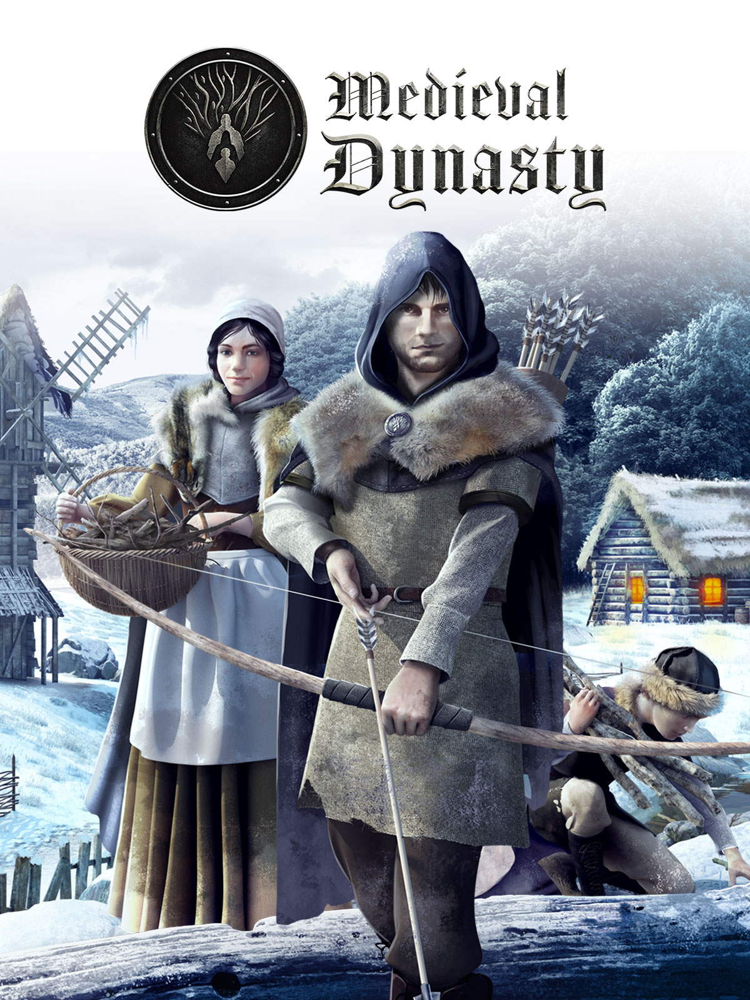

|  |
Medieval DynastyPESO 4GB GENEROS Acción y aventura Aventura Simulación Acción Rol PLATAFORMA PC DISTRIBUIDOR Toplitz Productions DESARROLLADOR Render Cube LANZAMIENTO 23 de Septiembre del 2021 |
En Medieval Dynasty, interpretas a un joven que ha huido de la guerra y quiere encargarse de su propio destino. Partiendo de la soledad, la inexperiencia y la pobreza, te convertirás en un maestro de numerosas habilidades, un líder de tu comunidad y el fundador de una próspera dinastía que está creada para durar y prosperar durante generaciones. La defensa contra animales salvajes mientras cazas para obtener alimento, la recogida de recursos y fabricación de equipamiento, la construcción de una casa y la fundación de toda una bulliciosa aldea mientras formas una familia... Todo ello contribuye a una experiencia de juego única a través de diversos géneros. Duros inviernos y sucesos inesperados desafiarán tus habilidades y destreza conforme luchas por construir tu propio legado.